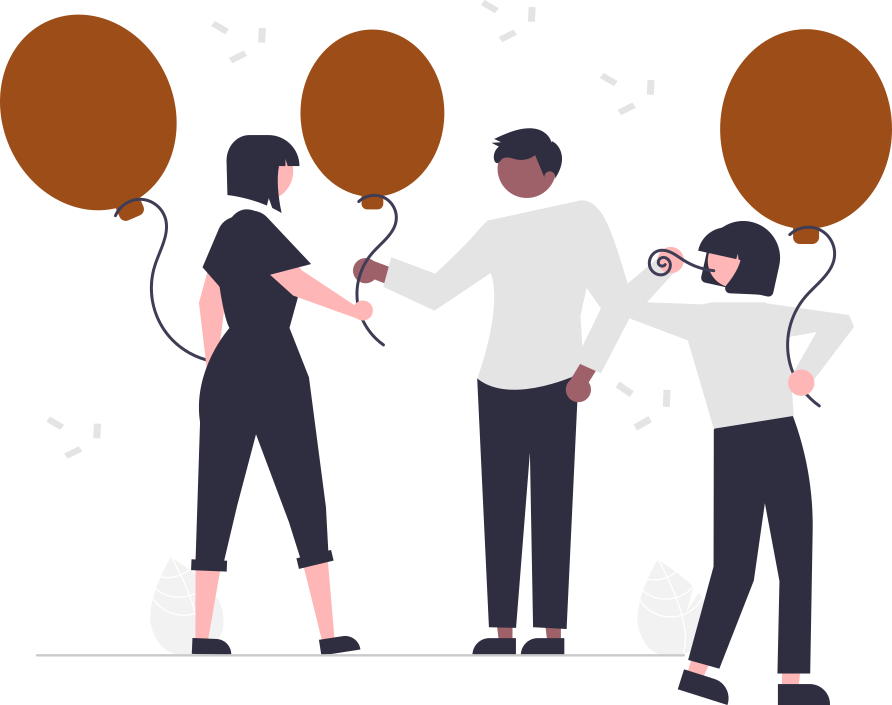
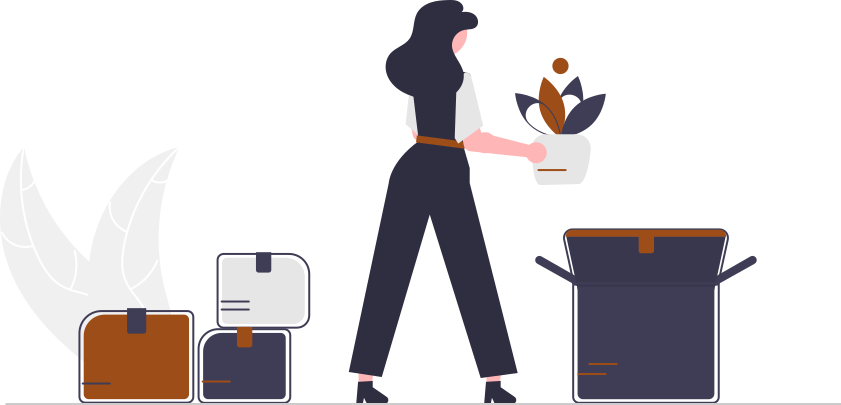
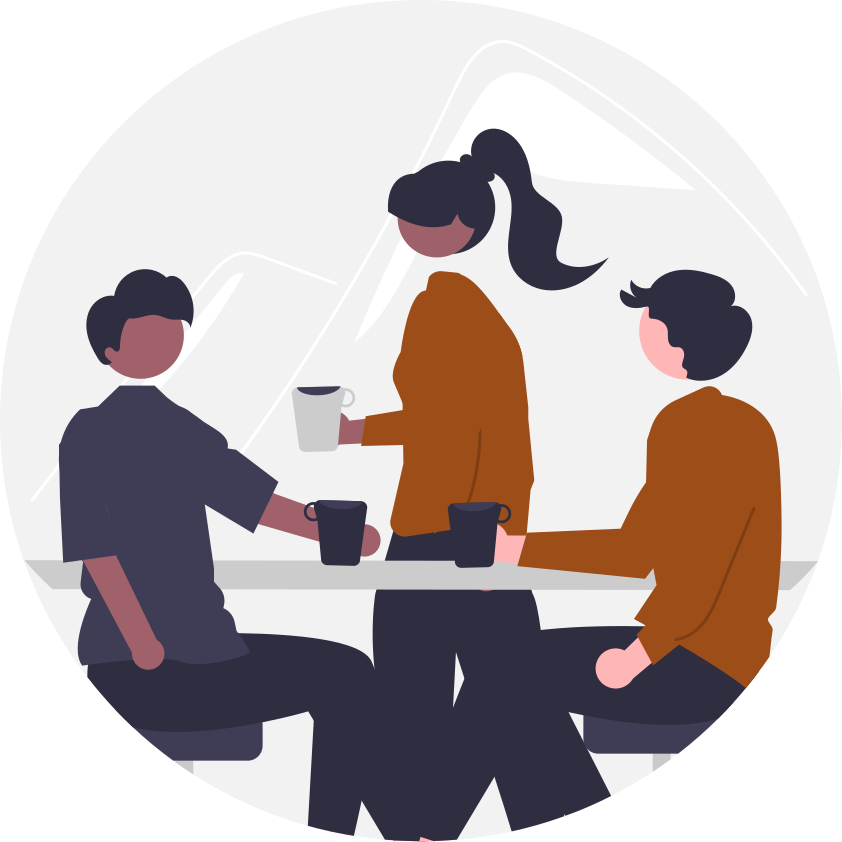
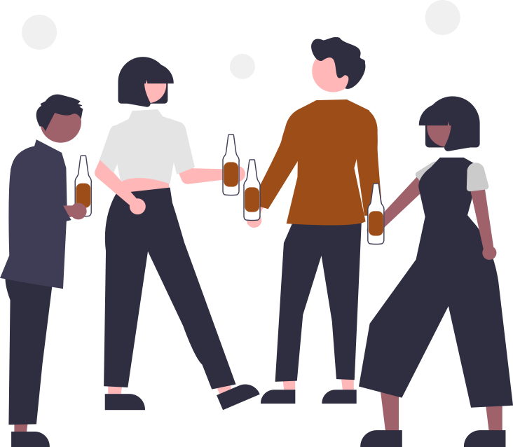

From birthdays to garden parties and family celebrations, our mobile coffee bar includes full setup, professional service, and freshly brewed espresso drinks your guests will love — without you worrying about logistics.
Od rođendana do žurki i porodičnih slavlja, naš pokretni kafe bar uključuje kompletnu postavku opreme, profesionalnu uslugu i sveže pripremljene espresso napitke koje će vaši gosti obožavati — bez vaše brige o logistici.
Your wedding day deserves exceptional coffee. Our coffee shop on wheels is a stylish and memorable addition. Professional barista service will serve freshly brewed coffee drinks for your guests during the reception, cocktail hour, or late-night celebrations. A perfect way to keep everyone happy and energized.
Vaš poseban dan zaslužuje izuzetnu kafu. Naš coffee shop na točkovima je elegantan i upečatljiv dodatak svakom venčanju. Naša profesionalna usluga će pripremiti sveže napitke od kafe za vaše goste tokom celog dana slavlja. Savršen način da svi naprave mali predah, uživaju u dobroj kafi i napune baterije.

Fast service, high quality, and great energy — our coffee shop on wheels is made for festivals and markets. We handle busy crowds with ease, creating a standout experience for visitors.
Brza usluga, visok kvalitet— naš kafe-bicikl je stvoren za festivale i markete. Sa lakoćom se nosimo sa velikim gužvama i stvaramo posebno iskustvo za posetioce.

From conferences to office celebrations, we provide professional coffee catering creating a relaxed space where clients, colleagues, and guests can connect over great coffee. We combine fast service with high-quality drinks — ideal for both small teams and large groups.
Od konferencija do proslava u kancelariji, pružamo profesionalni ketering stvarajući opušten ambijent gde klijenti, kolege i gosti mogu da se povežu i opuste uz vrhunsku kafu. Kombinacija brze usluge i visokog kvaliteta napitaka od kafe nas čini pogodnim kako za male timove tako i za velike grupe.

Coffee brings people together. Our mobile coffee shop is a great addition to team-building events, encouraging conversation, connection, and relaxed moments between activities.
Kafa spaja ljude. Naš mobilni coffee shop je sjajan dodatak team building događajima, podstiče razgovor, povezivanje i opuštene trenutke između aktivnosti.